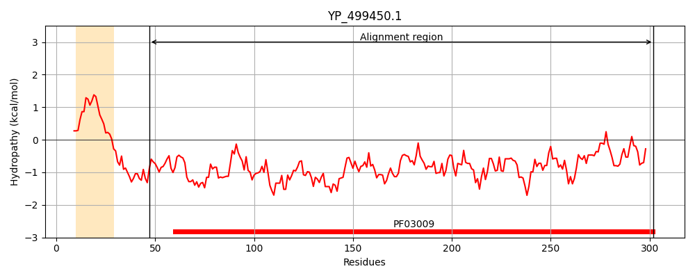
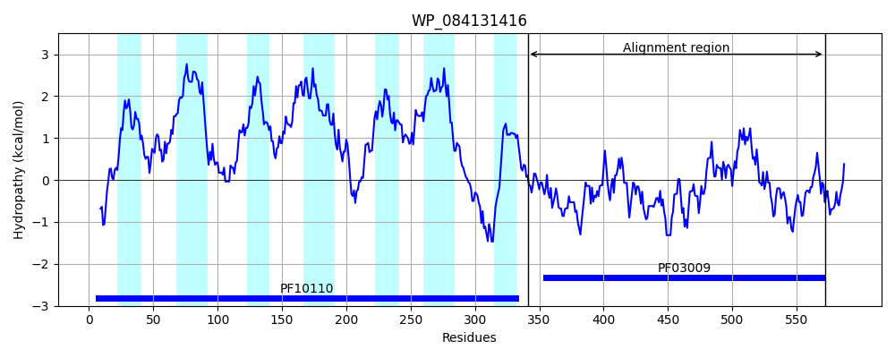
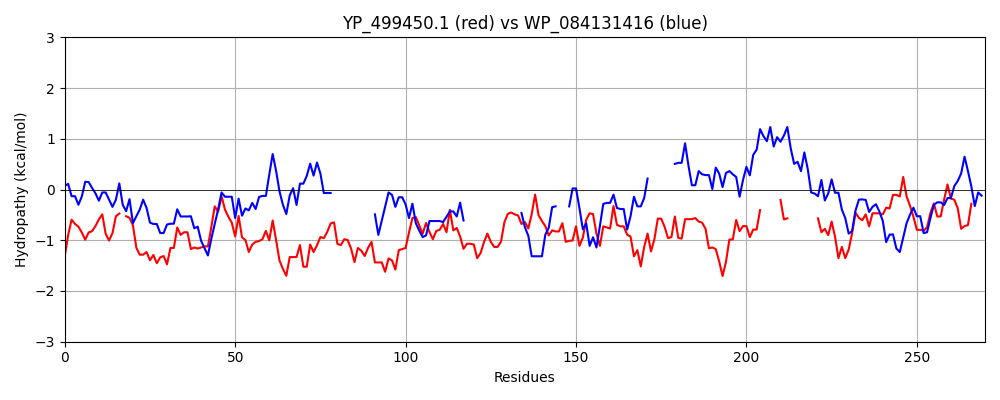

Hit Accession: WP_084131416
Hit TCID: 9.B.28.5.1
Hit Description: gnl|BL_ORD_ID|21507 gnl|TC-DB|WP_084131416.1|9.B.28.5.1 hypothetical protein [Enterococcus aquimarinus]
Mach Len: 270
e:0.000000
Query TMS Count : 1
Hit TMS Count: 7
TMS-Overlap Score: 0.450000
Predicted Substrates:None
BLAST Alignment:
Score: 145 , Bit scores: 60 bits, E-value: 3.0e-10, Alignment length: 270, Percentage identity: 23
Query: 47 TNLTNERFTTIAHRGAS-GYAPEHTFQAYDKSHNELKASYIEIDLQRTKDGHLVAMHDETVNRTTNGHGKVEDYTLDELKQLDAGSWFNKKYPKYARASYKNAKVPTLDEILERYGPNANYYIETKSPDVYPGMEEQLLASLKKHHLLNNNKLKNGHVMIQSFSDESLKKIHRQNKHVPLVKLVDKGELQQFNDQRLKEIRSYAI-----GLG--------PDYTDLTEQNTHHLKDLGFIVHPYTVNEKADMLRLNKYGVDGVFTNFAD 302
TN++++ TI+HRG S +++ +A + + +IE+D+Q TKD V HD + T + VE+ TL E+ P R + + A +PT D LE+ N +++LL +K ++ H +Q + L++ H L++ + G ++ F ++ + Y I GL +Y+ L + G V +T N+ M R+ YGV+G+ T+ D
Sbjct: 341 TNVSSQPIVTISHRGVSQANGVQNSIEALRATSQYYQPDFIEMDIQMTKDQQFVVFHDFNLRSLTGLNQIVEESTLSEI------------LPLTVRENDQQAAIPTFDAYLEQAKMN----------------QQKLLIEIKTQ---RKDEAVIVHQFLQQYKTRILEEGH-------LIQALSLGLVETFKNEAPELTIGYIIPFHFVGLPVSQADFFMMEYSTLNRSFIDAAHNEGKFVFTWTPNQTETMERMMFYGVEGIVTDRMD 572 | Protein Hydropathy Plots: |
|---|
|  |  |
Pairwise Alignment-Hydropathy Plot:
|
|---|
|  |